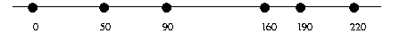

add-to-each using map and
lambda. When we design recursive functions, we don't think about the context of their use. Whether they are applied for the first time or whether they are called for the hundredth time in a recursive manner doesn't matter. They are to work according to their purpose statement, and that's all we need to know as we design the bodies of the functions.
Altough this principle of context-independence greatly facilitates the development of functions, it also causes occasional problems. In this section, we illustrate the most important problem with two examples. Both concern the loss of knowledge that occurs during a recursive evaluation. The first subsection shows how this loss makes a structurally recursive function more complicated and less efficient than necessary; the second one shows how the loss of knowledge causes a fatal flaw in an algorithm.
Suppose we are given the relative distances between a series of points, starting at the origin, and suppose we are to compute the absolute distances from the origin. For example, we might be given a line such as this:
Each number specifies the distance between two dots. What we need is the following picture, where each dot is annotated with the distance to the left-most dot:

Developing a program that performs this calculation is at this point an
exercise in structural function design. Figure 83
contains the complete Scheme program. When the given list is not
empty, the natural recursion computes the absolute distance of the
remainder of the dots to the first item on (rest alon). Because
the first item is not the actual origin and has a distance of
(first alon) to the origin, we must add (first alon) to
each and every item on the result of the recursive application. This second
step, adding a number to each item on a list of numbers, requires an
auxiliary function.
While the development of the program is straightforward, using it on larger and larger lists reveals a problem. Consider the evaluation of the following definition:64
(define x (relative-2-absolute (list 0 ... N)))
As we increase N, the time needed grows even
faster:65
|
Exercise 30.1.1.
Reformulate add-to-each using map and
lambda.  Solution
Solution
Exercise 30.1.2.
Determine the abstract running time of relative-2-absolute.
Hint: Evaluate the expression
(relative-2-absolute (list 0 ... N))
by hand. Start by replacing N with 1, 2, and 3. How many natural
recursions of relative-2-absolute and add-to-each are
required each time?  Solution
Solution
Considering the simplicity of the problem, the amount of ``work'' that the two functions perform is surprising. If we were to convert the same list by hand, we would tally up the total distance and just add it to the relative distances as we take another step along the line.
Let's attempt to design a second version of the function that is closer to our hand method. The new function is still a list-processing function, so we start from the appropriate template:
(define (rel-2-abs alon) (cond [(empty? alon) ...] [else ... (first alon) ... (rel-2-abs (rest alon)) ...]))
Now imagine an ``evaluation'' of (rel-2-abs (list 3 2 7)):
(rel-2-abs (list 3 2 7)) = (cons ... 3 ... (convert (list 2 7))) = (cons ... 3 ... (cons ... 2 ... (convert (list 7)))) = (cons ... 3 ... (cons ... 2 ... (cons ... 7 ... (convert empty))))
The first item of the result list should obviously be 3, and it is
easy to construct this list. But, the second one should be (+ 3
2), yet the second instance of rel-2-abs has no way of
``knowing'' that the first item of the original list is
3. The ``knowledge'' is lost.
Put differently, the problem is that recursive functions are independent of
their context. A function processes the list L in (cons N
L) in the exact same manner as L in (cons K L). Indeed,
it would also process L in that manner if it were given L
by itself. While this property makes structurally recursive functions easy
to design, it also means that solutions are, on occasion, more complicated
than necessary, and this complication may affect the performance of the
function.
To make up for the loss of ``knowledge,'' we equip the function with an
additional parameter: accu-dist. The new parameter represents
the accumulated distance, which is the tally that we keep when we convert a
list of relative distances to a list of absolute distances. Its initial
value must be 0. As the function processes the numbers on the list,
it must add them to the tally.
Here is the revised definition:
(define (rel-2-abs alon accu-dist) (cond [(empty? alon) empty] [else (cons (+ (first alon) accu-dist) (rel-2-abs (rest alon) (+ (first alon) accu-dist)))]))
The recursive application consumes the rest of the list and the new absolute distance of the current point to the origin. Although this means that two arguments are changing simultaneously, the change in the second one strictly depends on the first argument. The function is still a plain list-processing procedure.
Evaluating our running example with rel-2-abs shows how much the
use of an accumulator simplifies the conversion process:
= (rel-2-abs (list 3 2 7) 0) = (cons 3 (rel-2-abs (list 2 7) 3)) = (cons 3 (cons 5 (rel-2-abs (list 7) 5))) = (cons 3 (cons 5 (cons 12 (rel-2-abs empty 12)))) = (cons 3 (cons 5 (cons 12 empty)))
Each item in the list is processed once. When rel-2-abs reaches
the end of the argument list, the result is completely determined and no
further work is needed. In general, the function performs on the order of
N natural recursion steps for a list with N items.
One minor problem with the new definition is that the function consumes two
arguments and is thus not equivalent to relative-2-absolute, a
function of one argument. Worse, someone might accidentally misuse
rel-2-abs by applying it to a list of numbers and a number that
isn't 0. We can solve both problems with a function definition
that contains rel-2-abs in a local definition: see
figure 84.
Now, relative-2-absolute and
relative-2-absolute2 are indistinguishable.
|
Let us revisit the problem of finding a path in a graph from
section 28. Recall that we are given a collection of nodes
and connections between nodes, and that we need to determine whether there
is a route from a node labeled orig to one called
dest. Here we study the slightly simpler version of the problem of
simple graphs
where each node has exactly one (one-directional)
connection to another node.
Consider the example in figure 85. There are six nodes: A through F, and six connections. To get from A to E, we go through B, C, and E. It is impossible, though, to reach F from A or from any other node (besides F itself).
|
The right part of figure 85 contains a Scheme definition that represents the graph. Each node is represented by a list of two symbols. The first symbol is the label of the node; the second one is the reachable node. Here are the relevant data definitions:
A pair is a list of two nodes:
(cons S (cons T empty)) S, T are symbols.
A simple-graph is a list of pairs:
(listof pair). They are straightforward translations of our informal descriptions.
Finding a route in a graph is a problem of generative recursion.
We have data definitions, we have (informal) examples, and the header material is standard:
;;route-exists? : node node simple-graph -> boolean;; to determine whether there is a route fromorigtodestinsg(define (route-exists? orig dest sg) ...)
What we need are answers to the four basic questions of the recipe for generative recursion:
orig and dest are the same.
true.
orig is not the same as
dest, there is only one thing we can do, namely, go to the node to
which orig is connected and determine whether a route exists
between it and dest.
orig's neighbor
is connected to dest, then so is orig.
From here we just need to express these answers in Scheme, and we get an algorithm. Figure 86 contains the complete function, including a function for looking up the neighbor of a node in a simple graph.
|
Even a casual look at the function suggests that we have a
problem. Although the function is supposed to produce false if there
is no route from orig to dest, the function definition
doesn't contain false anywhere. Conversely, we need to ask what the
function actually does when there is no route between two nodes.
Take another look at figure 85. In this simple graph there
is no route from C to D. The connection that leaves C
passes right by D and instead goes to E. So let's look at how
route-exists? deals with the inputs 'C and 'D
for SimpleG:
(route-exists? 'C 'D '((A B) (B C) (C E) (D E) (E B) (F F))) = (route-exists? 'E 'D '((A B) (B C) (C E) (D E) (E B) (F F))) = (route-exists? 'B 'D '((A B) (B C) (C E) (D E) (E B) (F F))) = (route-exists? 'C 'D '((A B) (B C) (C E) (D E) (E B) (F F)))
The hand-evaluation confirms that as the function recurs, it calls itself with the exact same arguments again and again. In other words, the evaluation never stops.
Our problem with route-exists? is again a loss of ``knowledge,''
similar to that of relative-2-absolute in the preceding section.
Like relative-2-absolute, route-exists? was developed
according to the recipe and is independent of its context. That is, it
doesn't ``know'' whether some application is the first or the hundredth of
a recursive chain. In the case of route-exists? this means, in
particular, that the function doesn't ``know'' whether a previous
application in the current chain of recursions received the exact same
arguments.
The solution follows the pattern of the preceding section. We add a
parameter, which we call accu-seen and which represents the
accumulated list of origination nodes that the function has encountered,
starting with the original application. Its initial value must be
empty. As the function checks on a specific orig and
moves to its neighbors, orig is added to accu-seen.
Here is a first revision of route-exists?, dubbed
route-exists-accu?:
;;route-exists-accu? : node node simple-graph (listof node) -> boolean;; to determine whether there is a route fromorigtodestinsg, ;; assuming the nodes inaccu-seenhave already been inspected ;; and failed to deliver a solution (define (route-exists-accu? orig dest sg accu-seen) (cond [(symbol=? orig dest) true] [else (route-exists-accu? (neighbor orig sg) dest sg (cons orig accu-seen))]))
The addition of the new parameter alone does not solve our problem, but, as the following hand-evaluation shows, provides the foundation for one:
(route-exists-accu? 'C 'D '((A B) (B C) (C E) (D E) (E B) (F F)) empty) = (route-exists-accu? 'E 'D '((A B) (B C) (C E) (D E) (E B) (F F)) '(C)) = (route-exists-accu? 'B 'D '((A B) (B C) (C E) (D E) (E B) (F F)) '(E C)) = (route-exists-accu? 'C 'D '((A B) (B C) (C E) (D E) (E B) (F F)) '(B E C))
In contrast to the original function, the revised function no longer calls
itself with the exact same arguments. While the three arguments proper are
again the same for the third recursive application, the accumulator
argument is different from that of the first application. Instead of
empty, it is now '(B E C). The new value represents the
fact that during the search of a route from 'C to 'D, the
function has inspected 'B, 'E, and 'C as starting
points.
All we need to do at this point is exploit the accumulated knowledge in
the function definition. Specifically, we determine whether the given
orig is already an item on accu-seen. If so, the problem
is trivially solvable with false. Figure 87
contains the definition of route-exists2?, which is the revision
of route-exists?. The definition refers to contains, our
first recursive function (see part II), which determines
whether a specific symbol is on a list of symbols.
|
The definition of route-exists2? also eliminates the two minor
problems with the first revision. By localizing the definition of
the accumulating function, we can ensure that the first call to
re-accu? always uses empty as the initial value for
accu-seen. And, route-exists2? satisfies the exact same
contract and purpose statement as route-exists?.
Still, there is a significant difference between route-exists2?
and relative-to-absolute2. Whereas the latter was equivalent to
the original function, route-exists2? is an improvement over the
route-exists? function. After all, it corrects a fundamental flaw
in route-exists?, which completely failed to find an answer for
some inputs.
Exercise 30.2.1. Complete the definition in figure 87 and test it with the running example. Use the strategy of section 17.8 to formulate the tests as boolean-valued expressions.
Check with a hand-evaluation that this function computes the proper result
for 'A, 'C, and
SimpleG.  Solution
Solution
Exercise 30.2.2.
Edit the function in figure 87 so that the locally
defined function consumes only those arguments that change during an
evaluation.  Solution
Solution
Exercise 30.2.3.
Develop a vector-based representation of simple graphs. Adapt the function
in figure 87 so that it works on a vector-based
representation of simple graphs.  Solution
Solution
Exercise 30.2.4.
Modify the definitions of find-route and find-route/list
in figure 77 so that they produce false, even
if they encounter the same starting point
twice.  Solution
Solution
64 The most convenient way to construct this
list is to evaluate (build-list (add1 N) identity).
65 The time of evaluation will differ from computer to computer. These measurements were conducted on a Pentium 166Mhz running Linux. Measuring timings is also difficult. At a minimum, each evaluation should be repeated several times, and the time reported should be the average of those measurements.